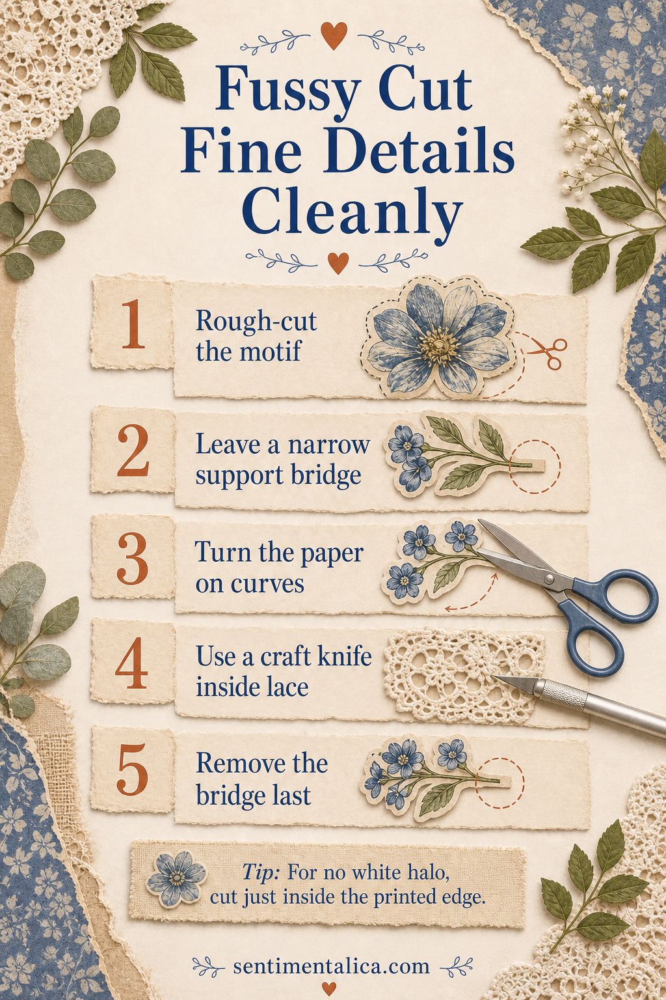

Intricate printable motifs become difficult when the surrounding sheet controls the movement. The cleanest method is to make the piece smaller first, protect delicate areas with temporary bridges, and turn the paper instead of twisting the scissors.

Rough-cut and preserve support
Separate the motif with a 5 to 10 mm border. When a leaf, antenna, or flower stem is attached by a narrow point, leave a small bridge of waste paper beside it. That bridge gives your fingers somewhere safe to hold and prevents the detail from bending while the rest is cut.
Move the paper around the blade
Use short sharp scissors and keep the blades aimed forward. Open them only partway, then rotate the paper smoothly through curves. For a borderless result, cut just inside the printed edge. If you want a halo, choose its width before starting and keep it consistent.
Use a knife for enclosed spaces
Lace centers and enclosed gaps cannot be reached cleanly with scissors. Place the piece on a cutting mat, use a fresh craft blade, and make several light passes. Cut away from the motif rather than dragging the blade toward a fragile edge. Remove support bridges only after every difficult curve is finished.
Store completed pieces flat in a shallow tray. If you need richly detailed florals and vintage motifs to practise with, the Sentimentalica printable image collections offer coordinated art that can be resized before printing.
Visuals in this article were created with AI assistance and art-directed for Sentimentalica.
Find more printable craft guidance in the Sentimentalica journal archive.